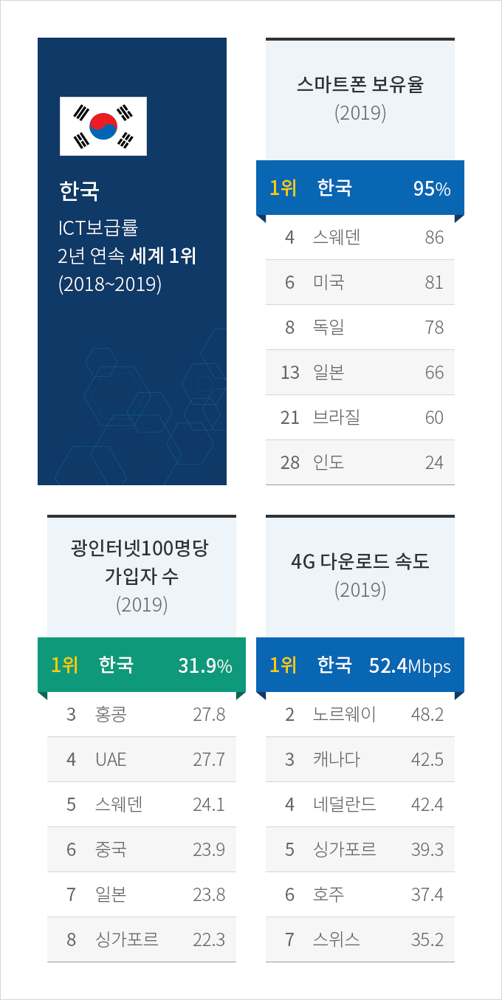
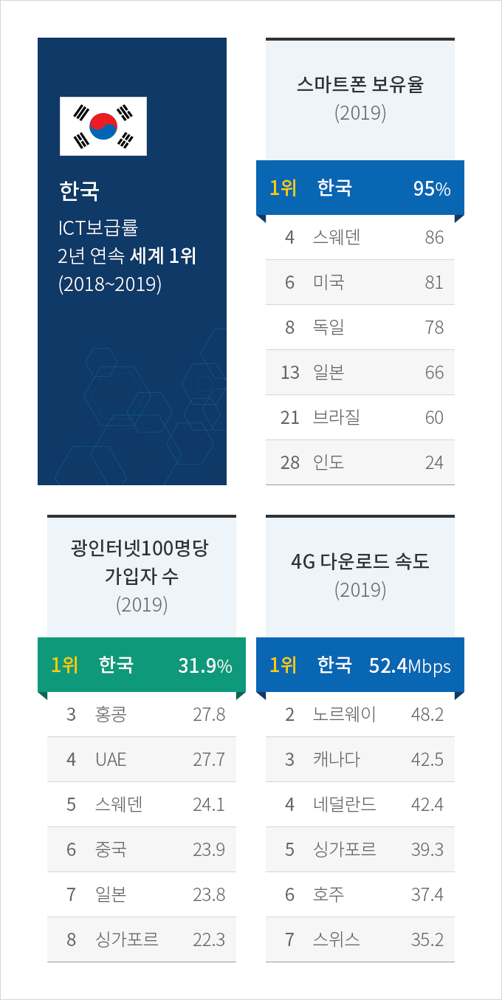
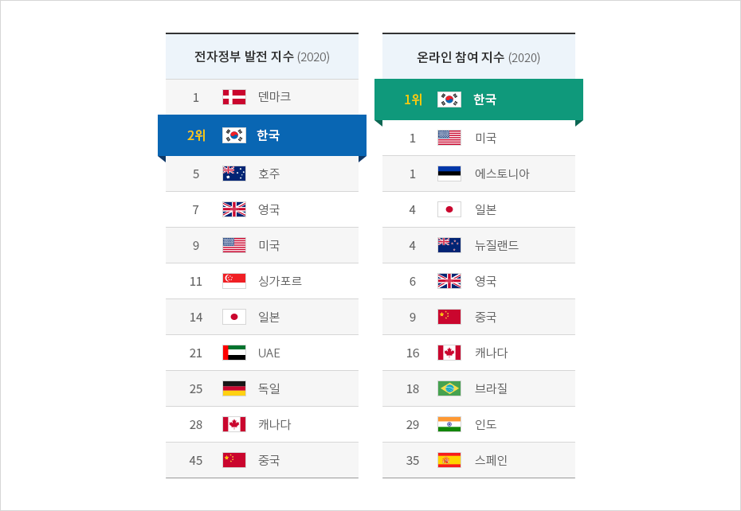
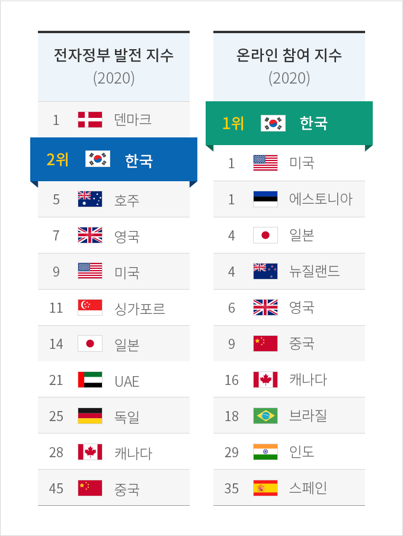

디지털
- Home
- Why KOREA
- 인프라
- 디지털
세계 최고의 디지털 인프라
세계경제포럼(WEF)에 따르면 한국의 정보통신기술(ICT) 보급은 2년 연속 세계 1위를 달성하였다.
한국의 디지털 인프라는 세계 최고 수준이며, 5G 세계 최초 상용화(2019.4월) 역시 한국이 글로벌 ICT 리더임을 반증한다.
한국 정부는 ‘디지털뉴딜‘ 정책을 통해 투자를 대폭 확대하고 디지털 인프라를 확립할 계획이다.
한국의 디지털 인프라는 세계 최고 수준이며, 5G 세계 최초 상용화(2019.4월) 역시 한국이 글로벌 ICT 리더임을 반증한다.
한국 정부는 ‘디지털뉴딜‘ 정책을 통해 투자를 대폭 확대하고 디지털 인프라를 확립할 계획이다.
 

한국 ICT보급률 3년 연속 세계1위 (2018~2020)
-
인터넷 접속 가능 가구비율(2020)
- 1위 한국 99.7%
- 3위 영국 97.3%
- 4위 네덜란드 97.0%
- 7위 독일 95.8%
- 8위 스페인 95.4%
- 16위 오스트리아 90.2%
- 20위 이탈리아 88.1%
-
초고속 인터넷 보급률(2020)
- 1위 한국 84.8%
- 4위 스웨덴 75.0%
- 5위 스페인 73.1%
- 10위 핀란드 57.3%
- 18위 프랑스 33.7%
- 24위 캐나다 22.1%
- 30위 미국 16.4%
-
5G 다운로드 속도(2020)
- 1위 사우디아라비아 414.2Mbps
- 2위 한국 312.7Mbps
- 3위 호주 215.7Mbps
- 4위 대만 210.2Mbps
- 5위 캐나다 178.1Mbps
- 6위 쿠웨이트 171.5Mbps
- 7위 스위스 150.7Mbps

※ 출처 : 세계경제포럼(WEF) 2019, Pew Research(2019), Open Signal
(2019)
해외로 수출되는 한국 전자정부
한국은 유엔의 전자정부 평가 중 온라인 참여지수 부문에서 2회 연속 1위에 올랐으며, 전자정부 발전지수에서도 2위를 차지했다.
또한, 세계 여러 나라에서 우수함을 높이 평가받아 한국 전자정부 시스템을 수출하고 있다.
한국의 전자정부 우수성은 한국 정부의 디지털화(Digitalization)에 대한 의지를 보여주는 동시에 한국 디지털 인프라의 강점을 드러낸다.
또한, 세계 여러 나라에서 우수함을 높이 평가받아 한국 전자정부 시스템을 수출하고 있다.
한국의 전자정부 우수성은 한국 정부의 디지털화(Digitalization)에 대한 의지를 보여주는 동시에 한국 디지털 인프라의 강점을 드러낸다.



전자전부 발전 지수 (2020)
- 1위 덴마크
- 2위 한국
- 5위 호주
- 7위 영국
- 9위 미국
- 11위 싱가포르
- 14위 일본
- 21위 UAE
- 25위 독일
- 28위 캐나다
- 45위 중국
- 1위 한국
- 1위 미국
- 1위 에스토니아
- 4위 일본
- 4위 뉴질랜드
- 6위 영국
- 9위 중국
- 16위 캐나다
- 18위 브라질
- 29위 인도
- 35위 스페인

※ 출처 : 2020 UN E-Government Survey(2020.7.10)